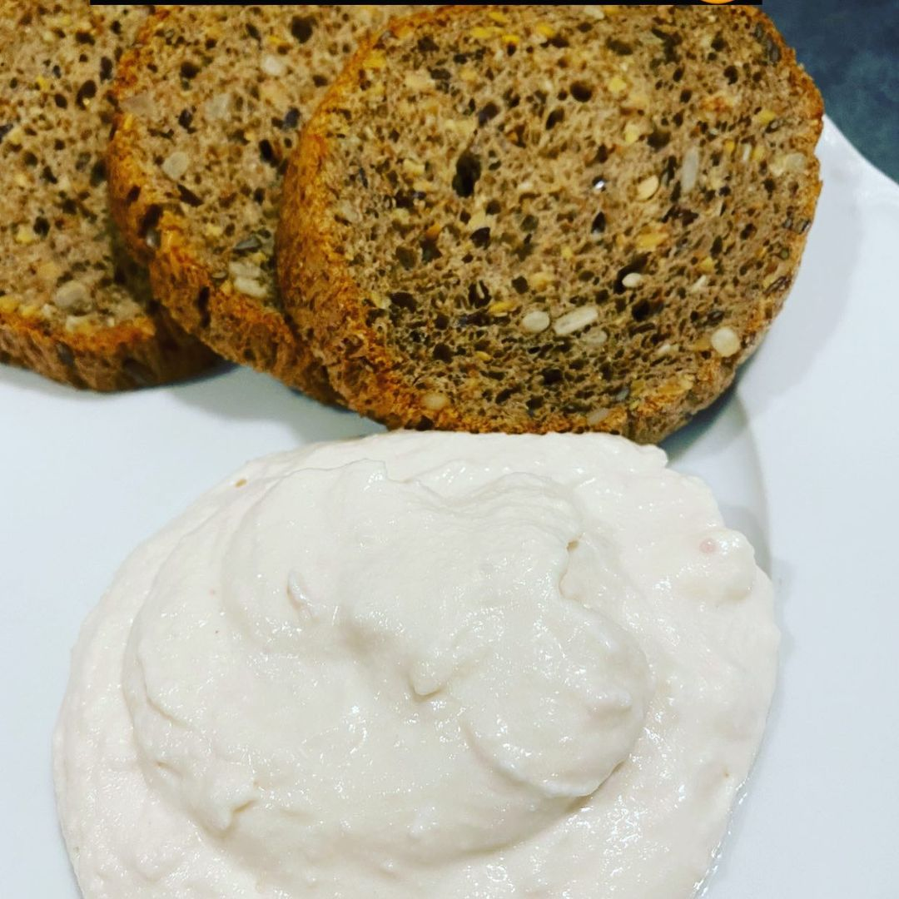

Šunková pěna- 3min.
100g krůtí šunky
1 ČL másla
1PL domácí lučiny
1 PL řeckého jogurtu
Šunku nakrájíme na kostičky a dáme do mísy se zbytkem ingrediencí. Připravíme si tyčový mixér a rozmixujeme. Podáváme s chlebem.
Dobrou chuť 🍞
#pomazanka #sunkovapena #krutipomazanka #lehciverze #snidane #svacina #jednohubka #chutovka #dosendvicu #dobaget #jentaknachleba #krutisunka #reckyjogurt #domacilucina #rychlovka #turborychlovka #dobrouchut